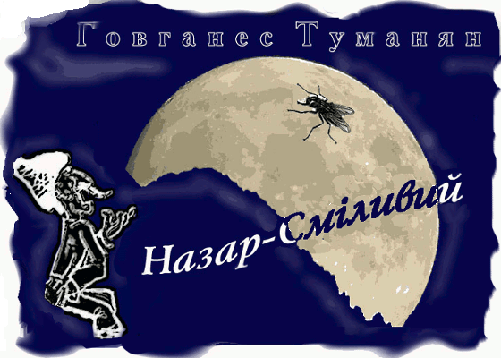

Назар-Смiливий (4)
Та, бач, дівчину цю хотів король сусідньої країни.
Як взнав, що його обійшли—віддали за іншого—військо збирає, війною на сімох братів рушає.
І от всі семеро великанів до Назара-Сміливого йдуть, звістку про війну несуть.
Про війну зачувши, Назар—плиг!—за поріг і – ну, п'ятами кивати – до рідного села, сховатись.
Люди ж думають: біжить одразу на військо вороже накинутись.
Переймають, хапають, питають: голіруч, без панцеру та одинцем - куди? Що це робиш? Чи голову втратив?
Ось і зброю несуть, панцер подають; жінка братів своїх благає: не допустіть, щоб Назар, через геройську свою затятість, тай кинувся б сам-один проти всій армії ворогів.
І вже поширюється в народі, та війську новина, а через шпигунів доходить і до ворога, що Назар-Сміливий, сам-один—без зброї—рвонув був до поля битви, насилу спинили і, оточивши-стрімуючи, до бою ведуть.
На полі битви скаженого жеребця підводять.
Назара підсаджують. Завзяттям пойняте військо шикується обабіч—із криком жахним: "Хай живе Назар-Сміливий!.. Смерть ворогам!"
Жеребець під Назаром, відчувши яка в сідлі нікчема, заіржав, голову задер тай вчвал пустився – прямісінько на ворожу армію.
Війську ж здалося: Назар-Сміливий на бій мчить.
"Ура! "- гукають та женуть слідом ув атаку.
Назар бачить, що коня йому не стримати і сам він ось-ось грюкнеться; руки простяг за якесь там дерево вчепитись, а воно, бач, трапилось зовсім трухляве – добряча гілка вломилась, в руках лишилась.
Вороже військо, вже й від попередніх чуток духом підупале, од цього видива зовсім перелякалось.
Завертаються: тікаймо, тікаймо!
Рятуйсь, хто може, бо Назар-Сміливий, дерева з корінням висмикуючи, налітає...
Скільки вже ворогів у той день поклали-перебили!
А ті, що заціліли, Назару-Сміливому до ніг шаблі свої складають, у покірності присягають.
З поля страхіливої битви, Назар-Сміливий до замку великанів повертає, а там народ вже на честь перемоги триумфальні арки зводить: із небувалим натхненням, вітанням, галасуванням, з музикою та співами, з дівчатами й квітами, з промовами й привітами – навстріч виходить.
Така вже слава, така шана – Назар аж очманів, ошелешив.
Отак з честю й славою, на площу короля свого одводять, а там вже й трон для нього встановлений.
Назар-Сміливий королем стає, а кожному з великанів посаду дає. І дивиться - увесь край в його руках.
* * *
Кажуть, й досі ще живе та королює Назар-Сміливий. А коли заходить мова про геройство, розум, талант – він регоче:
- Яке там геройство? Який розум? Що ще за талант? То все пусте. Головне, щоб пощастило.
Долю маєш – кейф спізнасш.
І, кажуть, досі кейфує Назар-Сміливий та над світом усім підсміюється.